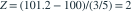

已知总体标准差为 3，独立正态样本量为 25，样本均值为 101.2。检验  对双侧备择，给定
对双侧备择，给定  ，p 值为多少？
，p 值为多少？
对双侧备择，给定 ，p 值为多少？- A0.02275
- B0.97725
- C0.9545
- D0.0455
我已思考，展开答案与解析
正确答案：D
- 检验统计量为

。 - 双侧 p 值为 。
- 所以在 5% 水平下拒绝原假设，但在 1% 水平下不拒绝。
易错提醒双侧 p 值要计算两个尾部，不能只取上尾概率。
南审 813 · 2026 · 二·3(1)(b)，PDF第2页
从大题拆分考点并重新编写选项；数值或设问有调整。
查看参考来源